Etanorm s frekvenčno regulacijo Pump-Drive
Namenjena za široko uporabo, kjer se spreminjajo zahteve po pretoku.
Črpalke servisiramo na vaši lokaciji, večje posege opravimo pri nas. Z originalnimi rezervnimi deli in znanjem proizvajalca.
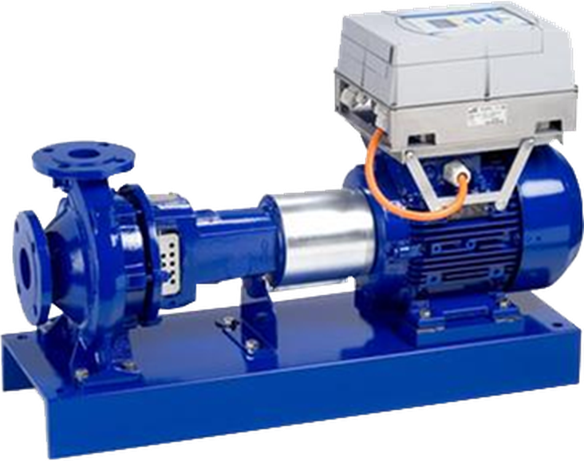
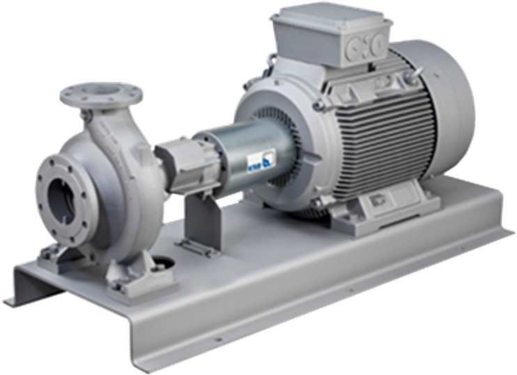
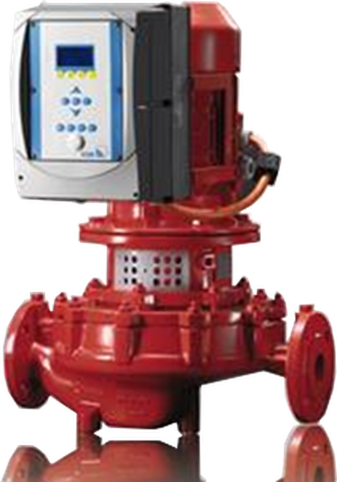
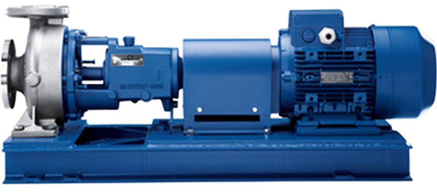
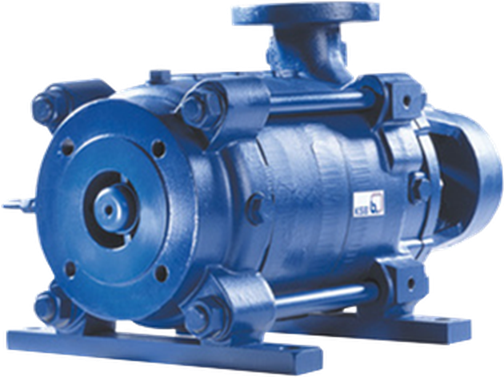
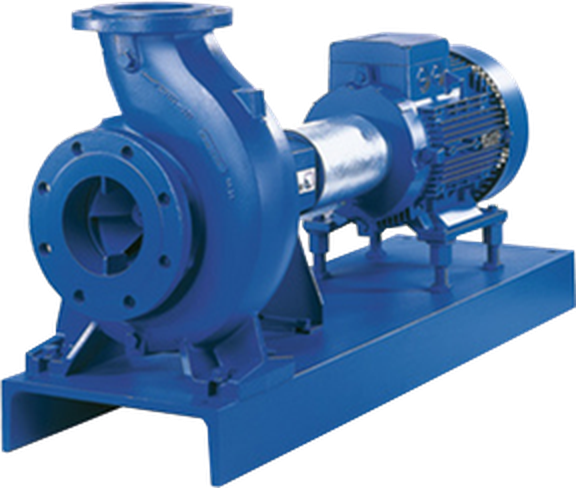
Namenjena za široko uporabo, kjer se spreminjajo zahteve po pretoku.
KSB je vodilni proizvajalec črpalk, armatur in pripadajočih sistemov v jugovzhodni Evropi.
Dolgoletne izkušnje pri vzdrževanju in servisiranju črpalk smo združili v tim strokovnjakov, ki rešijo tudi najzahtevnejše servisne posege.
Tekoče vzdrževanje v skladu z vašim terminskim planom pomeni minimalen čas popravila in najkrajši izpad delovanja celotne naprave.
Od prvega zagona do rednega vzdrževanja in dobave originalnih rezervnih delov.
Pooblaščeni servis črpalk KSB. Črpalke servisiramo na vaši lokaciji, večje posege opravimo pri nas.
Zagotovite si tekoče vzdrževanje črpalke in s tem najkrajši čas izpada delovanja celotne naprave.
Sporočite nam, kaj potrebujete. Najbolj pogosto iskane rezervne dele imamo na zalogi.
Redno servisiranje in dobava rezervnih delov v najkrajšem času. Po dogovoru jih hranimo na zalogi za vas.
Pošljite povpraševanjeOd procesne industrije do komunalnih čistilnih naprav. Servisiramo celoten program KSB.
Namenjena za široko uporabo, kjer se spreminjajo zahteve po pretoku.
Horizontalna, enostopenjska izvedba za procesno industrijo in vroče medije.
Za ogrevanje, klimatizacijo in industrijo.
Horizontalna črpalka za kemijsko in petrokemijsko industrijo ter rafinerije.
Večstopenjska, horizontalna ali vertikalna izvedba za oskrbo z vodo, pitno vodo in industrijo.
Horizontalna, enostopenjska izvedba po EN 733 za najširše sisteme oskrbe z vodo.
Potopna črpalka za umazano in odpadno vodo, komunalne čistilne naprave in industrijo.
Pokličite nas. Servisiramo tudi starejše serije in ostale črpalke, armature ter sisteme KSB.
031 329 250Zagon s strani pooblaščenega servisa vam zagotovi zanesljivo reševanje morebitnih reklamacij v času garancije in tudi kasneje.
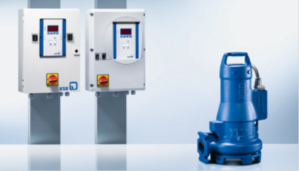
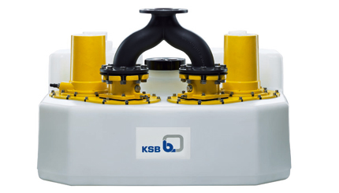
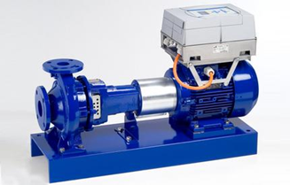
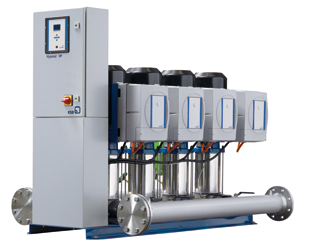
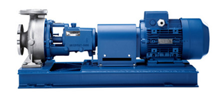
Po opravljenem posegu prejmete zapisnik, s katerim dokazujete, da je zagon opravila pooblaščena oseba.
Strošek za strokovno uravnavanje elastične sklopke je zanemarljiv glede na možne posledice.
Najpogostejši vzrok okvar na črpalkah je nestrokovno ravnanje z elastično sklopko. Znani so primeri, ko so črpalke odpovedale že po nekaj dneh.
Centriranje sklopkeDaljinski nadzor pokaže stanje vsake črpalke, alarme in obratovalne ure, še preden pride do izpada.
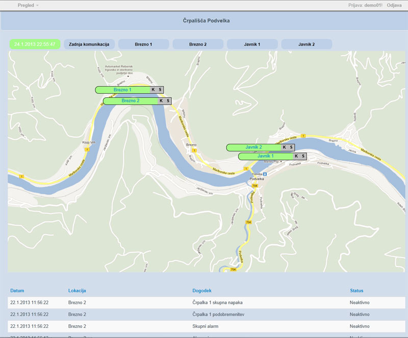
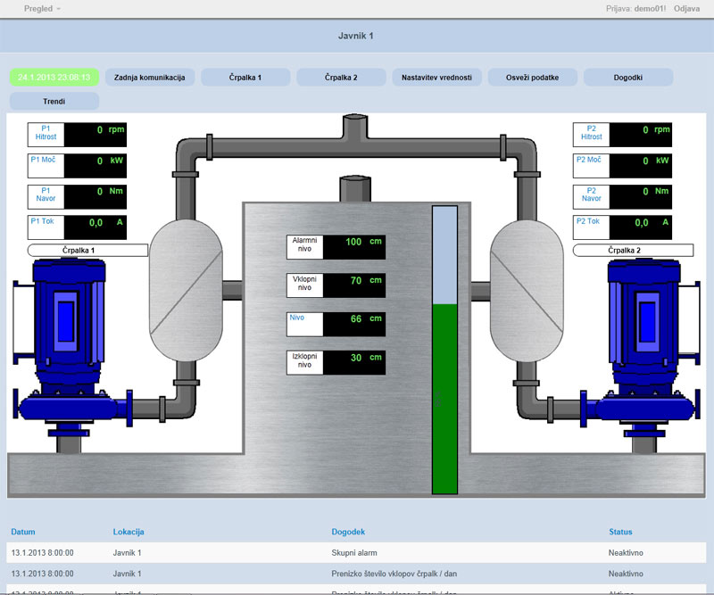
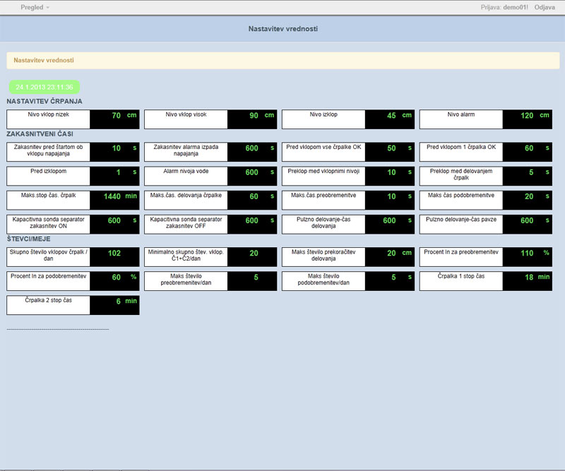
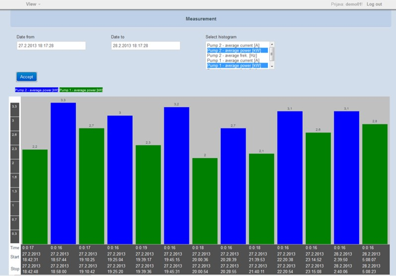
Primeri servisnih posegov na črpalkah KSB.
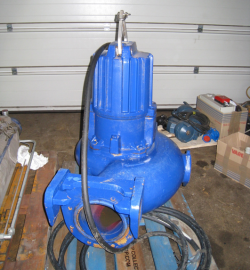
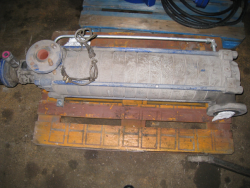
Našo posebno številko lahko pokličete ne glede na čas, vse dni v tednu.